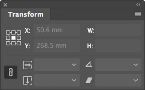
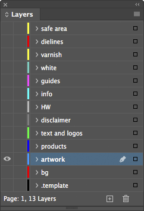
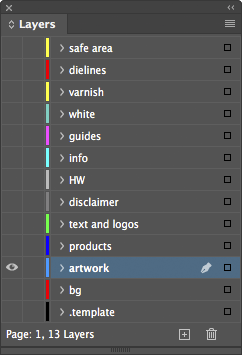

Collection of InDesign scripts for simple and repetitive tasks. Many are designed to be run through a shortcut (you can found a configuration suggestion in the Shortcuts section). Some are intended to be run in the batch_convert.jsx script by Peter Kahrel.
AlignTo scripts align the selected object(s) to the Align To setting:
ToggleAlignTo.jsx toggles the alignment between item, margins, page or spread (just run it repeatedly). ResetAlignTo.jsx resets the setting to Align to Selection.
SetRefPoint scripts change the reference point used for transformations (like clicking the little proxy squares in the Transform palette):

Note: Both sets should be assigned to the numeric keypad (see Shortcuts).
FitToPage scripts resize the selected object(s), without scaling them: if the object is larger than the page/margins/bleed, it will be reduced; if it is smaller but inside a 5% "snap" area, it will be enlarged. Ordinary frames are simply resized. In order not to deform them, rotated objects, ovals, groups, etc. are clipped in a frame which is resized. FitToSpread do the same for pages grouped in a spread.
FitTo...Forced.jsx resize exactly to the named dimensions.
TextAutosize.jsx fits the frame to the text and sets it to auto-size. You control the auto-sizing reference point by setting Paragraph Alignment for the horizontal axis, and Text Frame Options > Vertical Justification for the vertical axis:
 |
 |
 |
|
|---|---|---|---|
 |
 |
 |
 |
 |
 |
 |
 |
 |
 |
 |
 |
If the text has only one line, Auto-Sizing Type will be set to Height and width. If it has multiple lines, the first run will set it to Height only, the second run to Height and width.
These also work with one or more objects, but scale them proportionally, as a block.
ScaleToPageSize.jsx and ScaleToPageMargins.jsx scale to the page size or page margins. The H (height) and W (width) variants scale to the height or width of the page or page margins.
Make several preparations for export and can be used with batch_convert.jsx. The scripts detect alternative layers like visible, vizibil for safe area, or diecut, die cut, cut lines, stanze for dielines.
PrepareForPrint.jsx hides the safe area layer and moves the dielines, white and UV markings from dielines/white/varnish to separate spreads.
SafeArea.jsx creates a frame the size of the page margins on the safe area layer. It uses the Safe area swatch, which if it does not exist will be created with the value "C=0 M=100 Y=0 K=0".
SafeAreaHideLayer.jsx and SafeAreaShowLayer.jsx hide or show safe area.
DocCleanup.jsx cleans up unused swatches/layers/pages, unlocks all items, resets their scaling to 100%.
DocDefaults.jsx creates several swatches & layers, replaces some fonts (it runs ReplaceFonts.jsx, see below), and sets the page size and margins (it runs PageSizeFromFilename.jsx).
 

It also merges several layers:
| Layer | Merged to |
|---|---|
| rahmen, vis. area, visible, visible area, vizibil | safe area |
| cut, cut lines, decoupe, die, die cut, diecut, stanz, stanze, stanzform | dielines |
| uv, varnish | varnish |
| info copy, ratio | info |
| hw logo, logo hw, wh, whw | hw |
| copy, text, textes, txt, type | text and logos |
| tins | products |
| artwork, aw, elemente, layout, layouts | artwork |
| background, bg, hg, hintergrund | bg |
Both scripts change some settings according to my preferences.
Details
Rulers: Reset Zero Point
Rulers Units: Millimeters
View: Show Rulers
View: Show Frame Edges
Document Intent: Print
Transparency Blend Space: CMYK
CMYK Profile: ISO Coated v2 (ECI)
RGB Profile: sRGB IEC61966-2.1
Grids & Guides: Show Guides
Grids & Guides: Unlock Guides
Guides & Pasteboard: Margins: H 150 mm, V 25 mm
Guides & Pasteboard: Preview Background: Light Gray
Keyboard Increments: Cursor Key: 0.2 mm
Keyboard Increments: Size/Leading: 0.5 pt
Keyboard Increments: Baseline Shift: 0.1 pt
Keyboard Increments: Kerning/Tracking: 5/1000 em
Pages: Allow Document Pages to Shuffle
Layers: Ungroup Remembers Layers
Layers: Paste Remembers Layers
Transform Reference Point: Center
Type Options: Use Typographer's Quotes
Type Options: Apply Leading to Entire Paragraphs
CleanupSwatches.jsx converts RGB process swatches to CMYK, removes duplicates, renames them to "C= M= Y= K=" form, and deletes unused ones. Spot colors remain unchanged.
ReplaceFonts.jsx replaces fonts from a substitution list. The list is a 4 column TSV (tab-separated values) file with the same name as the script (ReplaceFonts.txt). The first line (the header) and lines beginning with ";" are ignored. You can use ShowFonts.jsx from Misc to get a tab delimited list of fonts for copy-pasting in ReplaceFonts.txt.
PageMarginsFromSelection.jsx sets the page margins to the selected objects.
PageSizeFromFilename.jsx resizes the pages of the document according to the file name:
| Filename | Total size | Safe area | Bleed |
|---|---|---|---|
Filename1_1400x400_700x137_10mm_QR.indd |
1400x400 | 700x137 | 10 |
Filename2_597x517_577x500.5_3mm V4_QR.indd |
597x517 | 577x500.5 | 3 |
Details
It searches for pairs of numbers like "000x000" (where "000" means a group of at least one digit, followed or not by decimals, and optionally by "mm" or "cm"). If only one pair is found, it will be the size of the page. If two are found (e.g., "000x000_000x000"), the larger pair will be the page size, the smaller pair the visible/safe area size. If followed by a one- or two-digit sequence, this is considered bleed.
PageSizeFromMargins.jsx resizes each page to its margins.
PageSizeFromSelection.jsx resizes the current page to the selected objects (similar to Artboards > Fit to Selected Art in Illustrator).
CleanupLabels.jsx: sometimes objects that have a label attached (Script Label) are reused, which may create problems later. CleanupLabels.jsx deletes all labels from the document (if nothing is selected), or from the selected items.
Clip.jsx: To manipulate some objects it can sometimes be useful to temporarily insert them into a container (clipping frame). Clip.jsx embeds selected objects in a clipping frame or restores them if already clipped. ClipUndo.jsx restores one or several clipped objects at once.
PageRatios.jsx calculates the ratio of each page and displays it in the upper left corner.
QR.jsx adds a QR code on the bottom left corner of each page, or saves it in a separate file. It has two operating modes:
Manually: It prompts for the QR text and adds the code on the page (or in a separate file).
Batch: If a file named QR.txt is found in the same folder, the script will generate QR files with the data from it. This must be a 2 column TSV (tab-separated values) file; the first column is the QR filename, the second the code. The first line (the header) and lines beginning with ";" are ignored:
| QR Filename | QR Code |
|---|---|
| Filename1_1400x400_700x137_10mm_QR.indd | FILE1 1400x400_700x137 |
| Filename2_597x517_577x500.5_3mm V4_QR.indd | FILE2 597x517_577x500.5 V4 |
Note: You can use "|" for manually splitting the text into several lines.
ShowFonts.jsx shows all fonts used in the current document (useful with ReplaceFonts.jsx).
ShowProfiles.jsx shows all color profiles available to InDesign (for when you think you have a color profile installed).
ShowProperties.jsx shows properties and methods of a selected object (useful for debugging).
ZoomToSelection.jsx resembles Fit Selection in Window (⌥⌘=), but with some improvements:
Running a frequently used script from the Scripts panel is quite annoying. You can make the process instantaneous by assigning keyboard shortcuts from Edit > Keyboard Shortcuts... > Product Area > Scripts:
| Alignment | Proxy | Fitting/Scale | Setup | ||||
|---|---|---|---|---|---|---|---|
AlignToTL.jsx |
Num7 | SetRefPointTL.jsx |
⌃Num7 | FitToPage.jsx |
F11 | DocCleanup.jsx |
F2 |
AlignToL.jsx |
Num4 | SetRefPointL.jsx |
⌃Num4 | FitToPageMargins.jsx |
⌥F11 | DocDefaults.jsx |
⌥F2 |
AlignToBL.jsx |
Num1 | SetRefPointBL.jsx |
⌃Num1 | FitToPageBleed.jsx |
⇧F11 | CleanupSwatches.jsx |
⇧F2 |
AlignToT.jsx |
Num8 | SetRefPointT.jsx |
⌃Num8 | FitToPageBleedForced.jsx |
⇧⌘F11 | ||
AlignToC.jsx |
Num5 | SetRefPointC.jsx |
⌃Num5 | FitToSpread.jsx |
F12 | Misc | |
AlignToB.jsx |
Num2 | SetRefPointB.jsx |
⌃Num2 | FitToSpreadMargins.jsx |
⌥F12 | Clip.jsx |
Num* |
AlignToTR.jsx |
Num9 | SetRefPointTR.jsx |
⌃Num9 | FitToSpreadBleed.jsx |
⇧F12 | QR.jsx |
F9 |
AlignToR.jsx |
Num6 | SetRefPointR.jsx |
⌃Num6 | FitToSpreadBleedForced.jsx |
⇧⌘F12 | ZoomToSelection.jsx |
F4 |
AlignToBR.jsx |
Num3 | SetRefPointBR.jsx |
⌃Num3 | ScaleToPageSize.jsx |
F5 | ||
ToggleAlignTo.jsx |
Num0 | ScaleToPageMargins.jsx |
⌥F5 | ||||
ResetAlignTo.jsx |
⌃Num0 | TextAutosize.jsx |
F6 |
The code is released under the MIT License (see LICENSE.txt). Send an e-mail to Paul Chiorean <jpeg AT basement.ro> or report an issue on Github if you encounter problems or have any suggestions.
README.md • November 2, 2020